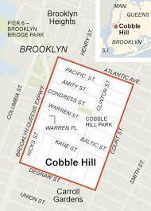
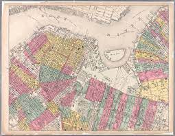
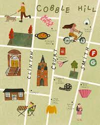
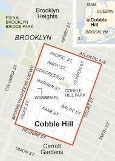
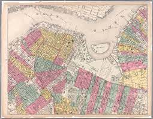
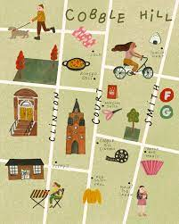

Cobble Hill Map
- The neighborhood of Cobble Hill lies along the East River waterfront and is centrally located between DUMBO, Carrol Gardens, and Park Slope.
- TRAIN:
- Bergen St. Station - F and G trains
- BUS:
- B62, M22, B57, BXM18
- WALK
- Atlantic Av. and Smith and Court St. are the main roads to travel by in Cobble Hill. Additionally, walk from DUMBO or Red Hook through Brooklyn Bridge Park!
 




